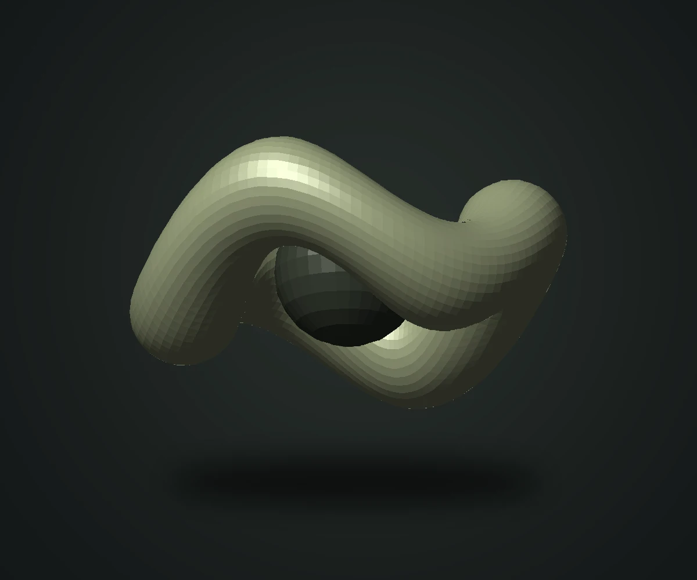
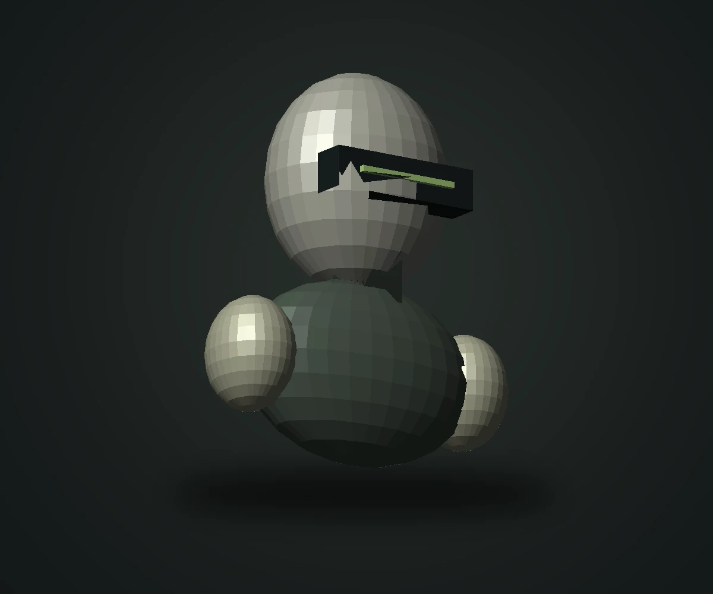

FEATURED EXPLORATION 01 / 06FORM STUDYOrbit / 01↗01 / SELECTED WORK
A collection of
curiosities.
Characters, worlds, and the objects in between.
Sample collection — original placeholders.

THE ARTIST / BEHIND THE POLYGONS02 / ABOUT ME
Curiosity in
three dimensions.
CRAFT
TOOLBOX
03 / GET IN TOUCH